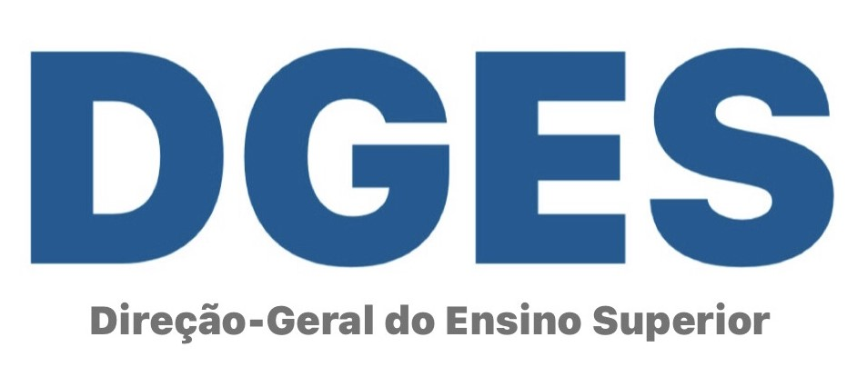

BOLSAS DE ESTUDO
POR MÉRITO (BEM)
As Bolsas de Estudo por Mérito (BEM) são atribuídas pela Direção Geral de Ensino Superior (DGES) aos estudantes do Ensino Superior e regulamentada pelo Despacho n.º 13531/2009 (2.ª serie), de 9 de junho, alterado pelo Despacho n.º 7761/2017 (2.ª serie), de 4 de setembro.
A BEM é uma prestação pecuniária, de valor fixo, destinada a estudantes que tenham mostrado um aproveitamento escolar excecional. No ano letivo em causa, o estudante terá de ter obtido aprovação em todas as Unidades Curriculares (UC) que integram o plano de estudos do ano curricular em que se encontrava inscrito e a média das classificações das UC a que se refere a alínea anterior não ser inferior a Muito Bom (16 valores).
Esta informação não dispensa a leitura atenta do regulamento para a atribuição das Bolsas de Estudo por Mérito da DGES.
Bolsas atribuídas no ano letivo de 2023/2024 e referentes ao ano letivo de 2021/2022
Apresentação da candidatura através do preenchimento da ficha de inscrição própria e remetida via email para o endereço bem@iseclisboa.pt até dia 13 de março de 2024, nos termos do regulamento em anexo.
Pode consultar aqui o Regulamento [+], a Ficha de Candidatura [+] e os Resultados Definitivos [+].
Bolsas atribuídas no ano letivo de 2024/2025 e referentes ao ano letivo de 2022/2023
Quando as candidaturas estiverem abertas será atualizado o regulamento e disponibilizado a ficha de candidatura.
Para mais informações: bem@iseclisboa.pt
BOLSAS DE MÉRITO
DA CAIXA GERAL DE DEPÓSITOS (BMCGD)
As de Mérito da Caixa Geral de Depósitos (BMCGD) são atribuídas pela Caixa Geral de Depósitos (CGD) no âmbito do protocolo de cooperação existente entre a Universitas/ISEC Lisboa e a CGD, regulamentada pelo presente regulamento.
Estas bolsas destinam-se a estudantes que tenham tido um aproveitamento escolar excecional. A média das classificações das unidades curriculares tem de ter sido igual ou superior a 16 valores (não contempla ECTS obtidos por Creditação de Competências).
Esta informação não dispensa a leitura atenta do regulamento para a atribuição das Bolsas por Mérito da Caixa Geral de Depósitos.
Bolsas atribuídas no ano letivo de 2023/2024 e referentes ao ano letivo de 2022/2023
Apresentação da candidatura através do preenchimento da ficha de inscrição própria e remetida via email para o endereço bem@iseclisboa.pt até dia 29 de abril de 2024, nos termos do regulamento em anexo.
Pode consultar aqui o Regulamento [+], a Ficha de Candidatura [+] e os Resultados Definitivos [+].
Bolsas atribuídas no ano letivo de 2024/2025 e referentes ao ano letivo de 2023/2024
Quando as candidaturas estiverem abertas será atualizado o regulamento e disponibilizado a ficha de candidatura.
Para mais informações: bem@iseclisboa.pt